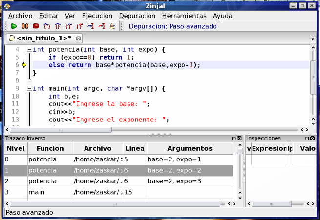

Puede hacer doble click sobre cada función para dirigirse a ese punto del código (observe que la flecha sobre el margen que indica la posición será verde cuando esté en el nivel más interno, y amarilla cuando se seleccione otro). Además, la tabla muestra una columna con los argumentos de la función.
Presione F6 cuatro veces y observe como se "apilan" llamadas a potencia, con diferentes argumentos (recursividad).

Volver... Continuar...